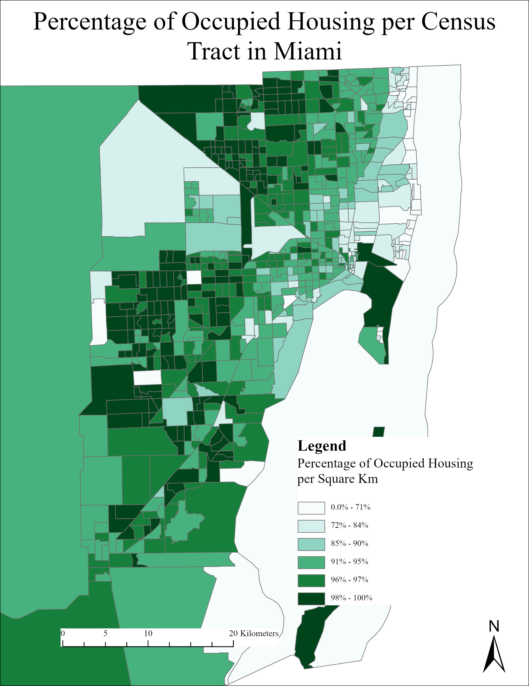

Percentage of Occupied Housing by Census Tracts in Miami
Narrative: How I solved the problem
The problem this map aims to solve is the density of occupied housing in Miami, Florida by census tracts. In order to find the density of occupied housing in this city, I joined a table consisting of Miami data with the Miami tracts shapefile. Then, I created a new field representing the area of each census tract, and calculated geometry in order to find the area of each tract per square kilometer. I created another a new field representing the percentage of occupied housing for each tract, and calculated that field. I selected “graduated colors” as the primary symbology in order to create a choropleth map, and used the advanced symbology options to appropriately label the values as percentages.
Tools
Some important tools I used include:
- Join
- Calculate Geometry
- Calucate Field
- Symbology: Category (percentage), graduated colors